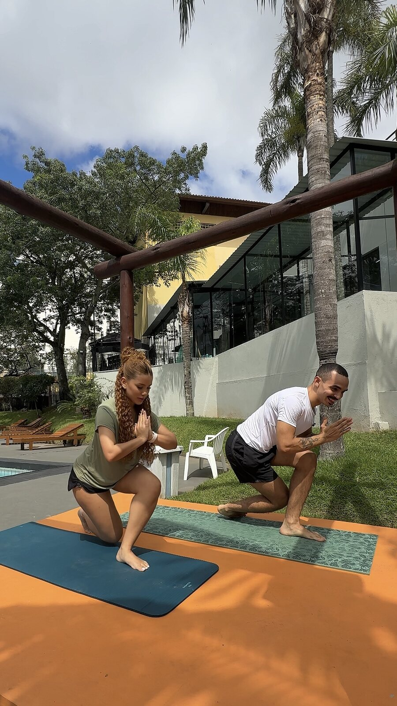

Alimentação
Escolhas, contexto e uma estratégia possível para a vida real.
The Cycle Club · wellness + desenvolvimento pessoal
Uma jornada para sair do piloto automático e aprender a continuar quando a vida muda de ritmo.
Alimentação, movimento, bem-estar e desenvolvimento pessoal conectados por um método que você leva com você.
Planos a partir de R$ 79Ver experiências →
Uma vida saudável não acontece em uma área só.
O piloto automático
Você começa motivado. A rotina muda. Um treino se perde, a alimentação sai do planejado ou a semana pesa. Então vem a culpa e a sensação de que é preciso começar tudo outra vez.
O piloto automático transforma uma pausa em fracasso.
O The Cycle propõe outro movimento: perceber → compreender → escolher → continuar.Uma solução integrada
Não basta trocar o plano se a forma de responder às interrupções continua a mesma.
Escolhas, contexto e uma estratégia possível para a vida real.
Prática, adaptação e retorno sem transformar pausa em abandono.
Energia, descanso, autocuidado e presença.
Padrões e escolhas que sustentam a pessoa por trás da rotina.
O Método The Cycle atravessa tudo isso. Você não recebe apenas orientações isoladas, aprende uma forma de responder à própria vida.
Quando o método faz sentido para você, o próximo passo é escolher como quer viver essa jornada.
Método The Cycle
O ORLC ajuda você a sair da reação automática e transformar clareza em um próximo passo possível.
Perceber antes de reagir.
Compreender o que existe por trás.
Soltar padrões e cobranças que dificultam o ciclo.
Transformar clareza em ação.
A experiência do Club
Cada espaço tem uma função clara para transformar entendimento em prática e pertencimento.
Orientações curtas e guias apresentam o método sem virar uma biblioteca de aulas.
Cycle Practices, check-ins, ferramentas, missões e o desafio contínuo no GymRats colocam o método em movimento.
No WhatsApp, dúvidas, pequenas vitórias e semanas difíceis encontram conversa, identificação e comunidade.
Nos encontros ao vivo, experiências viram conversa, reflexão e próximos passos possíveis.
Os conteúdos orientam.
As ferramentas ajudam a praticar.
Os profissionais individualizam o cuidado.
A comunidade ajuda você a continuar.
Cuidado que começa pela escuta
Toda jornada começa aqui
Uma ferramenta de escuta que dá origem ao seu Mapa do Ciclo Atual.
Alimentação com contexto
Rotina, objetivos e possibilidades reais orientam uma estratégia alimentar conectada à sua vida.
Não é uma orientação solta. É cuidado profissional conectado ao seu contexto e ao método.
Disponível nas experiências Plus e Premium.
Quando o plano muda
Viagem, cansaço, uma refeição diferente ou um treino perdido não precisam apagar o caminho.
Uma estratégia pode mudar. O que você aprende a aplicar continua com você.“Já estraguei a semana.”
↓Com consciência“O que aconteceu e qual é a menor forma de continuar hoje?”

Exclusivo Premium
O Cycle Experience leva o método para um encontro presencial com movimento, conversa, prática e comunidade.
Três portas de entrada
Você pode entrar diretamente em qualquer plano. O que muda é o tempo, a profundidade e a proximidade da experiência.
Uma jornada mais curta para viver o método e começar com direção.
Mais tempo e cuidado para transformar entendimento em prática.
Equivale a R$ 65,67 por mês de jornada.
A experiência mais completa, próxima e exclusiva do The Cycle.
Equivale a R$ 82,83 por mês de jornada.
Ainda não sabe qual experiência combina com seu momento?
Conversar com Gui e Ana no WhatsApp ↗
Gui + Ana
Gui e Ana conduzem a experiência, os encontros e a comunidade para ajudar cada pessoa a desenvolver mais consciência, autonomia e repertório para continuar.
Conversar com a genteDúvidas importantes
Não. É uma jornada que combina método, ferramentas, comunidade, encontros e cuidado profissional.
Não. A proposta é começar a partir de onde você está e construir um próximo passo possível.
No Plus e no Premium, a nutrição parte da sua rotina, objetivos e possibilidades para construir uma estratégia individualizada.
É justamente aí que o método ganha sentido: observar, compreender e encontrar uma forma possível de continuar.
O que muda é a duração, a profundidade, a proximidade e as experiências. Você pode entrar diretamente em qualquer um deles.
Se ainda estiver em dúvida, fale com Gui e Ana no WhatsApp. A gente ajuda você a entender qual experiência faz mais sentido agora.
O próximo ciclo pode começar de outro jeito
Observe. Revele. Libere. Crie. E leve com você uma forma mais consciente de continuar.